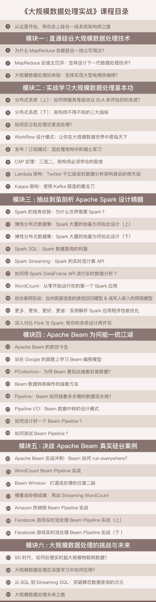

- 00 开篇词 从这里开始，带你走上硅谷一线系统架构师之路.md.html
- 01 为什么MapReduce会被硅谷一线公司淘汰？.md.html
- 02 MapReduce后谁主沉浮：怎样设计下一代数据处理技术？.md.html
- 03 大规模数据处理初体验：怎样实现大型电商热销榜？.md.html
- 04 分布式系统（上）：学会用服务等级协议SLA来评估你的系统.md.html
- 05 分布式系统（下）：架构师不得不知的三大指标.md.html
- 06 如何区分批处理还是流处理？.md.html
- 07 Workflow设计模式：让你在大规模数据世界中君临天下.md.html
- 08 发布_订阅模式：流处理架构中的瑞士军刀.md.html
- 09 CAP定理：三选二，架构师必须学会的取舍.md.html
- 10 Lambda架构：Twitter亿级实时数据分析架构背后的倚天剑.md.html
- 11 Kappa架构：利用Kafka锻造的屠龙刀.md.html
- 12 我们为什么需要Spark？.md.html
- 13 弹性分布式数据集：Spark大厦的地基（上）.md.html
- 14 弹性分布式数据集：Spark大厦的地基（下）.md.html
- 15 Spark SQL：Spark数据查询的利器.md.html
- 16 Spark Streaming：Spark的实时流计算API.md.html
- 17 Structured Streaming：如何用DataFrame API进行实时数据分析_.md.html
- 18 Word Count：从零开始运行你的第一个Spark应用.md.html
- 19 综合案例实战：处理加州房屋信息，构建线性回归模型.md.html
- 20 流处理案例实战：分析纽约市出租车载客信息.md.html
- 21 深入对比Spark与Flink：帮你系统设计两开花.md.html
- 22 Apache Beam的前世今生.md.html
- 23 站在Google的肩膀上学习Beam编程模型.md.html
- 24 PCollection：为什么Beam要如此抽象封装数据？.md.html
- 25 Transform：Beam数据转换操作的抽象方法.md.html
- 26 Pipeline：Beam如何抽象多步骤的数据流水线？.md.html
- 27 Pipeline I_O_ Beam数据中转的设计模式.md.html
- 28 如何设计创建好一个Beam Pipeline？.md.html
- 29 如何测试Beam Pipeline？.md.html
- 30 Apache Beam实战冲刺：Beam如何run everywhere_.md.html
- 31 WordCount Beam Pipeline实战.md.html
- 32 Beam Window：打通流处理的任督二脉.md.html
- 33 横看成岭侧成峰：再战Streaming WordCount.md.html
- 34 Amazon热销榜Beam Pipeline实战.md.html
- 35 Facebook游戏实时流处理Beam Pipeline实战（上）.md.html
- 36 Facebook游戏实时流处理Beam Pipeline实战（下）.md.html
- 37 5G时代，如何处理超大规模物联网数据.md.html
- 38 大规模数据处理在深度学习中如何应用？.md.html
- 39 从SQL到Streaming SQL：突破静态数据查询的次元.md.html
- 40 大规模数据处理未来之路.md.html
- FAQ第一期 学习大规模数据处理需要什么基础？.md.html
- FAQ第三期 Apache Beam基础答疑.md.html
- FAQ第二期 Spark案例实战答疑.md.html
- 加油站 Practice makes perfect！.md.html
- 结束语 世间所有的相遇，都是久别重逢.md.html
- 捐赠
00 开篇词 从这里开始，带你走上硅谷一线系统架构师之路
你好，我是蔡元楠。目前是Google Brain的软件工程师。
在接下来的4个月时间里，我会与你一起探索大规模数据处理的世界。
在开始我们的系统性学习之前，我想先和你分享两个我亲历的故事，借此告诉你，我为什么要开这个专栏。
2014年，我刚开始在美国找工作，在一次面试中，面试官让我解释一下C++的smart pointer和string view。我完全回答不上来。
当时我面露难色怀疑人生，难道我的前半生学的是“假的”C++吗？
回想学习经历，虽然我在一个还可以的高校里学习了C++课程，考试成绩也是90分以上。但我的学习资料只有按C++ 98标准编写的教材，和当时流行的CSDN论坛文章。
而当时的教材里根本没有提到过smart pointer和string view。
没想到工业界早就进入了C++ 0x/11标准甚至是C++ 17（当时是试验标准）。我后悔没有学习紧跟时代的最新技术，而信息的不对称就会造成巨大的认知偏差。
那学习“最新技术”一定就是好事情吗？我想通过第二个故事来回答这个问题。
2017年，我帮Google Ventures（Google的风险投资基金，会寻找并帮助优秀初创公司）在投的初创公司做导师，那时候经常参加一些对方公司的技术架构评审。
一次评审中，对方的技术VP眉飞色舞地介绍他们的技术框架和××大厂一样，罗列了Kylin和Tornado等一些时髦的技术名词。
因为我并不了解提到的几个技术，就好奇地问为什么Kylin适合他们团队，Kylin为他们解决了哪些独特的问题？
他当时的回答并没能说服我和别的同事：“因为××大厂也在用，这就是未来的技术方向”。
看得出来，这位技术VP还没有真的搞清楚使用一个技术的原因。
学会用一个技术只是第一步，最重要的是要追问自己：
- 这个技术解决了哪些痛点？
- 别的技术为什么不能解决？
- 这个技术用怎样的方法解决问题？
- 采用这个技术真的是最好的方法吗？
- 如果不用这个技术，你会怎样独立解决这类问题？
如果没有这些深层次的思考，你就永远只是在赶技术的时髦而已，不会拥有影响他人的技术领导力。
事实上在Google，类似这样的“灵魂追问”每天都在发生。
这里敢于打碎任何权威，所有的技术设计都是从问题出发。每一个工程师都会独立思考究竟什么是最佳方案，而不是照搬现有结论。
正如乔布斯所说，过去的点最终会连成线。这两个经历让我深感有使命去帮助更多技术同行，比如第一个故事里的我，或者是第二个故事里的初创公司VP。我想设计一个专栏，去解决故事里的问题。
第一，我想要介绍硅谷最前沿技术和真实的案例。
比如，在大规模数据处理领域，MapReduce或者Apache Storm的不少设计理念已经无法胜任最新的挑战。
所以，我会介绍最新的知识，例如框架层面的前后端分离理念，和批处理流处理统一的思想。
第二，我不想只停留在照本宣科的层面。
正如上文所说，学会用一个或者两个技术是不够的。
更重要的是，我会剖析技术框架产生的原因和它们解决的问题。这样当下一次你再碰到相似的问题时，就不用照搬别人的方法。
为什么写大规模数据处理？
为什么会选择大规模数据处理这个主题呢？并不是因为我觉得这个主题受众多、销量好，相反，我认为大部分人都还没有正确理解数据处理技术，常常见到的误区有如下几种。
第一，低估了数据处理的重要性。
因为我在Google Brain的AI应用领域工作，切身感受到过，没有高质量的数据处理的话，人工智能是只有人工没有智能的。
Google也曾在很长的一段时间里低估过数据处理。
例如，在语义理解上，Google认为自己有最多的搜索文本数据，最好的算法，那就一定能把语义理解做的最好。
可是到2016年左右，一个名不见经传的德国小公司却一举超过了Google，大家都很惊讶。后来发现原来他们凭借的是高质量的数据标注和处理。
第二，低估了数据处理工程师在组织架构上的重要性。
许多工程师都喜欢自嘲自己的工作是“搬砖”，事实也正是如此。
包括我在内，很多人的工作内容都避不开数据的搬运和处理。把数据从这个格式处理成那个格式，把数据从这个数据库搬到那个数据库，这个服务器搬到那个服务器，这个客户端搬到那个客户端。
可能连你自己都还没有意识到，即使是一个写前端的工程师，他的很多工作还是数据处理。
大数据领域泰斗级人物Jesse Anderson曾做过一项研究，一个人工智能团队的合理组织架构，需要4/5的数据处理工程师。很不幸，很多团队没有认识到这一点。
第三，低估了数据处理规模变大带来的复杂度。
我把这个专栏定位在“大规模”数据处理，因为我想着重在数据规模变大时需要的技术思想。
很多人可能还没有遇到过“大规模”数据的问题，容易把问题想简单了。
我在Google面试过很多优秀的候选人，应对普通的编程问题，他们能够用算法和数据结构解决得很好。可是当我追问数据规模变大时怎么设计系统，他们的回答却并不让人满意。
当你的产品从1万用户到1亿用户，技术团队从10个人到1000个人，之前的方法还能奏效吗？
第四，高估了上手数据处理的难度。
一方面我们需要认识到大规模的数据处理是有复杂的因素的。但另一方面，我想在这个专栏里教会你，有了正确的工具和技术理念，现在上手数据处理并不困难。
在Google，我见到很多应届生来了半年后也能轻松应对上亿的数据量。
我给开篇词起名为《从这里开始，带你走上硅谷一线系统架构师之路》，就是为了给你设计切实可操作的学习路径，让你比别人更准确深入地掌握实用的大规模数据处理技术，最终通往硅谷一线系统架构师的水平。
因此，我们的学习路径会是这样的。
第一部分，先会用原汁原味最实际的硅谷一线大厂的案例，向你解释MapReduce为什么不能应对最新的技术挑战。然后我会从实际的问题出发，从头开始引导你怎样从顶层设计一个数据处理框架。
第二部分，同样是结合实战案例，来讲解在数据处理框架的使用和设计中必需的一些基础知识。这些案例紧贴应用，可能就是你的团队明天会碰到的问题。
第三、第四部分深入拆解了Apache Spark和Apache Beam。不仅会用实际的案例教会你如何使用，还要教会你为什么它们这么设计。你会发现它们的设计其实大致和第一部分的顶层设计是一致的。下一次，即使这个世界一无所有，你也能构建类似的框架解决一系列问题。
第五部分按Google T6级别设计，是带着代码的真枪实弹的架构设计。毫不夸张地说，能完整掌握第五部分的思想精髓，你就能比肩硅谷一线大规模数据处理架构师。
第六部分着重培养你的技术远见。因为，是否能现在就开始准备应对10年后人类社会的技术挑战，是你拉开与别人差距的重要一站。

在刚开始动笔写专栏的时候，我就在设想，什么样的人会是这个专栏的目标读者呢？
直到专栏快上线，我写下这篇开篇词，我才真正定义读者的标签——应该就是跟我一样渴望成长的人。是的，我和你一样，都渴望成长——渴望知识的成长，渴望经验的成长，渴望财富的成长。
所以我想把这个专栏设计成一份共同的成长规划，而不是一本死板的教材。
正如我在开头的小故事里所说的，这个世界没有谁是绝对的权威。
我希望你每一期都能在留言栏里质疑、提问和讨论。这些互动能帮助我和别的同学一起提高。
最后，我期待和你一起开始学习，共同成长！
© 2019 - 2023 Liangliang Lee. Powered by gin and hexo-theme-book.